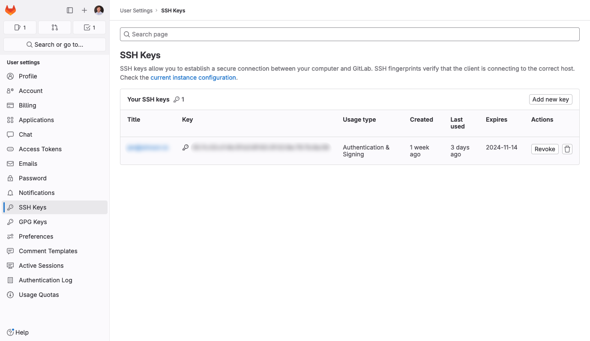
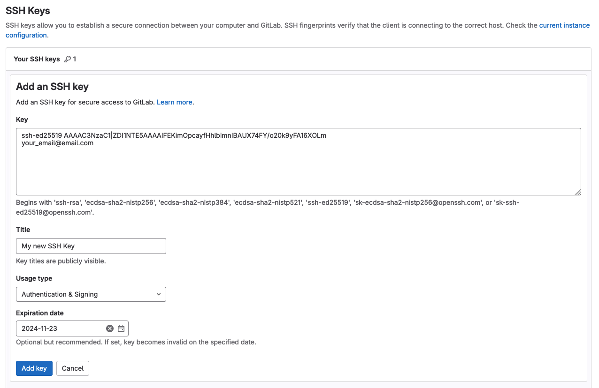

Authenticating to GitLab via SSH
This document was orginially part of a course titled Introduction to version Control in R with RStudio, Git, and GitHub.
The course was originally created by Mike Croucher from RSE-Sheffield under a Creative Commons Attribution Share Alike 4.0 International. It was subsequently adapted by Malika Ihle from Reproducible Research Oxford. The overview image is from Dumitru Uzun. You are free to use this work in your own projects.
Minor changes have been made to the document by Jan Simson from LMU Munich to make it available offline & adapt it for GitLab.
Secure the connection between your computer and GitLab
When working with a GitLab repository, you’ll often need to identify yourself to GitLab using your username and password. There are several ways to secure this connection further. Establishing a secure connection is mandatory since August 2021.
Today we will use SSH Keys to secure your identification to GitLab as this is a common way to secure connections, which you may encounter again in other contexts in the future. An SSH key is also an alternate way to identify yourself that doesn’t require you to enter you username and password every time.
SSH keys come in pairs, a public key that gets shared with services like GitLab, and a private key that is stored only on your computer. If the keys match, you’re granted access.
The procedure below only need to be executed once per GitLab account and for each computer you will use to connect to GitLab.
Checking for existing SSH key pair
The first step in using SSH authorization with GitLab is to generate your own key pair. However, you might already have an SSH key pair on your machine. You can check to see if one exists by moving to your .ssh directory and listing the contents.
On windows, open Git Bash (start menu -> Git Bash). On MacOS, open the Terminal app. On Linux, open your distribution’s (or any other) terminal emulator. Enter the following commands one after the other (hitting ENTER after each command).
ls ~/.sshThe ls command lists the content of a directory, here ~/.ssh. Check the directory listing to see if you already have a public SSH key. By default, the filenames of the public keys are one of the following:
id_rsa.pub id_ecdsa.pub id_ed25519.pub
If you do you, can skip the section that generate a SSH key pair, and go to the section ‘Adding a new SSH key to your GitLab account’.
If you don’t have an existing public and private key pair (which is to be expected!), or if you receive an error that ~/.ssh doesn’t exist, that this file location doesn’t exist, or that you can’t access this folder, go ahead and generate a new SSH key pair!
Generating an SSH key pair
In the command line, type the following by replacing your_email@email.com with your own email address. Pay attention to spaces and capital letter!
ssh-keygen -t ed25519 -C "your_email@email.com"This creates a new SSH key pair, using the provided email as a label.
When you’re prompted to “Enter a file in which to save the key,” press ENTER. This accepts the default file location. This is the promt that will appear:
Generating public/private ed25519 key pair.
Enter file in which to save the key (/Users/username/.ssh/id_ed25519):You will then be asked to provide a passphrase. Protecting your keys with a password is optional but highly recommended. Note: when you type passwords in the command line, nothing is displayed, not even ***. This is the promt that will appear:
Enter passphrase (empty for no passphrase):
Enter same passphrase again:When the key generation is complete, you should see the following confirmation:
Your identification has been saved in /Users/username/.ssh/id_ed25519.
Your public key has been saved in /Users/username/.ssh/id_ed25519.pub.
The key fingerprint is:
SHA256:6nr/zo0g7Bz7WMRwy34maBhQy1UZyX47gT+egRdlIhs your_email@email.com
The key's randomart image is:
+--[ED25519 256]--+
| .o++ |
| o oF . o |
| . o+ =.+. |
| . + += . |
| . +S++ |
| . ..oB= |
| . ++*=. |
| o.==* o |
| .o.o+** . |
+----[SHA256]-----+Adding a new SSH key to your GitLab account
We now need to tell GitLab about your public key. Display the contents of your new public key file with cat. Be careful: do not copy the content of your private key, but your public key. Your public key ends with .pub. Please type the command below exactly as it is, in its entirety:
cat ~/.ssh/id_ed25519.pubThe output should look something like this:
ssh-ed25519 AAAAC3NzaC1lZDI1NTE5AAAAIFEKiimOpcayfHhlbjmnIBAUX74FY/o20k9yFA16XOLm your_email@email.comCopy the contents of the output to your clipboard.
Login to gitlab.com and bring up your account preferences by clicking on your profile photo (top left) and selecting Preferences. Click on SSH keys (left sidebar), and then click on the button ‘Add new key’.

In the “Title” field, add a descriptive label for the new key. For example, if you’re using a personal laptop, you might call this key “Personal MacBook Air”. Finally, paste the contents of your clipboard into the Key text box and hit the green ‘Add key’ button to save. Enter your GitLab password if prompted.

That’s it ! Going forward, you can use the SSH clone URL when copying a repo to your local machine (we will cover this in the second tutorial).
Adding your key to the ssh-agent (optional)
Read the following to type your passphrase only once.
If you protected your key with a passphrase, you will be prompted for it every time time you use your key. To save you some typing, it is possible to use a piece of software called ssh-agent to ask your system to “remember” your key. In practice, this means you only have to type your passphrase once.
Depending on your system, the following might not be necessary. On most GNU/Linux distributions, your key will be automatically added to the ssh-agent after the first time you enter it. If you keep getting asked for your key each time you want to clone or push to a GitLab repository, you can follow the following instructions.
In the command line, start the ssh-agent with this command:
eval "$(ssh-agent -s)"which should display an output similar to something like this:
Agent pid 59566Then, add your key to the ssh-agent by typing the entirety of this command:
ssh-add ~/.ssh/id_ed25519That’s it! You are completely done with the setting up part, which you will need to repeat only if you change computer. Let the fun begin!